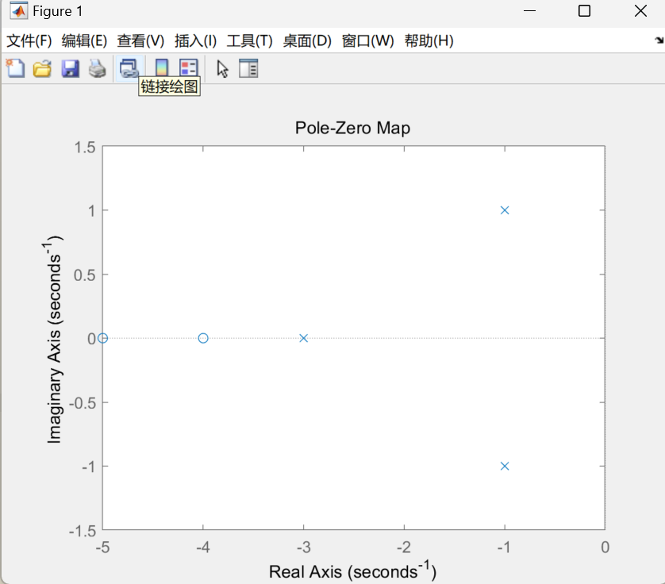
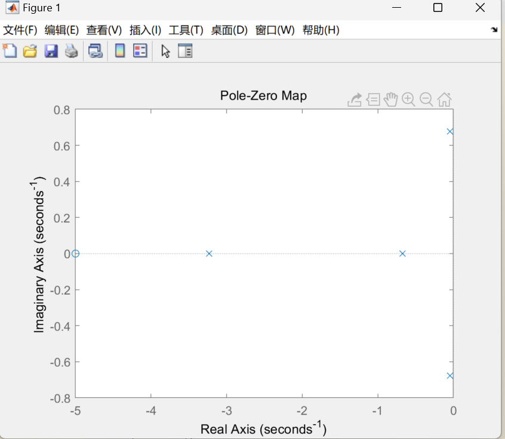

1. 掌握利用 MATLAB 建立控制系统模型的方法。
2. 掌握系统的各种模型表述及相互之间的转换关系。
3. 学习和掌握系统模型连接的等效变换
- 系统的模型描述了系统的输入、输出变量以及内部各变量之间的关系，表征一个系统的模型有很多种，如微分方程、传递函数、状态空间方程等。这里主要介绍系统多项式型传递函数（TF）模型、零极点型传递函数（ZPK）模型和状态空间方程（SS）模型
传递函数（TF）模型
传递函数是描述线性定常系统输入-输出关系的一种最常用的数学模型，其表达式一般为G(s)=ansn+an−1sn−1++a1s1+a0bmsm+bm−1sm−1++b1s1+b0
在 MATLAB 中，直接使用行向量分子分母多项式的表示系统，即
num=[bm,bm−1,…b1,b0]
den=[an,an−1,…a1,a0]
调用 tf 函数可以建立传递函数 TF 对象模型，调用格式如下：
Gtf=tf(num,den)
Tfdata 函数可以从 TF 对象模型中提取分子分母多项式，调用格式如下：
[num,den]=tfdata(Gtf)返回 cell 类型的分子分母多项式系数
[num,den]=tfdata(Gtf,′v′) 返回向量形式的分子分母多项式系数
零极点增益（ZPK）模型
传递函数因式分解后可以写成
G(s)=(s−p1)(s−p2)...(s−pn)k(s−z1)(s−z2)...(s−zm)
式中， z1, z2 ,… , zm 称为传递函数的零点， p1, p2 ,… , pn 称为传递函数的极点，k为传递系数(系统增益).在 MATLAB 中，直接用[z,p,k]矢量组表示系统，其中 z，p，k 分别表示系统的零极
点及其增益，即：
z=[z1,z2,…,zm];p=[p1,p2,…,pn];k=[k];
调用 zpk 函数可以创建 ZPK 对象模型，调用格式如下：
Gzpk=zpk(z,p,k)
同样，MATLAB 提供了 zpkdata 命令用来提取系统的零极点及其增益，调用格式如下：
[z,p,k]=zpkdata(Gzpk) 返回 cell 类型的零极点及增益
[z,p,k]=zpkdata(Gzpk,’v’) 返回向量形式的零极点及增益
函数 pzmap 可用于求取系统的零极点或绘制系统的零极点图，调用格式如下：
pzmap(G) 在复平面内绘出系统模型的零极点图。
[p,z]=pzmap(G) 返回的系统零极点，不作图。
状态空间（SS）模型
由状态变量描述的系统模型称为状态空间模型，由状态方程和输出方程组成：{x˙y=Ax+Bu=Cx+Du
其中：x 为 n 维状态向量；u 为 r 维输入向量； y 为 m 维输出向量； A 为 n×n 方阵，称为
系统矩阵；B 为 n×r 矩阵，称为输入矩阵或控制矩阵；C 为 m×n 矩阵，称为输出矩阵；D
为 m×r 矩阵，称为直接传输矩阵。
在 MATLAB 中，直接用矩阵组[A,B,C,D]表示系统，调用 ss 函数可以创建 SS 对象模型，调用格式如下：
Gss=ss(A,B,C,D)
同样，MATLAB 提供了 ssdata 命令用来提取系统的 A、B、C、D 矩阵，调用格式如下：
[A,B,C,D]=ssdata(Gss)返回系统模型的 A、B、C、D 矩阵
三种模型之间的转换
上述三种模型之间可以互相转换，MATLAB 实现方法如下
- TF 模型→ZPK 模型：zpk(SYS)或tf2zp(num,den)
- TF 模型→SS 模型：ss(SYS)或tf2ss(num,den)
- ZPK 模型→TF 模型：tf(SYS)或zp2tf(z,p,k)
- ZPK 模型→SS 模型：ss(SYS)或zp2ss(z,p,k)
- SS 模型→TF 模型：tf(SYS)或ss2tf(A,B,C,D)
- SS 模型→ZPK 模型：zpk(SYS)或ss2zp(A,B,C,D)
num = [2 18 40];
den = [1 5 8 6];
G = tf(num, den)
[z, p, k] = tf2zp(num, den)
[A, B, C, D] = tf2ss(num, den)
pzmap(G)

num = [2 18 40];
den = [1 5 8 6];
G = tf(num, den)
[z, p, k] = tf2zp(num, den)
[A, B, C, D] = tf2ss(num, den)
pzmap(G)

G1 = tf([2 6 5], [1 4 5 2])
G2 = tf([1 4 1], [1 9 8 0])
G3 = zpk([-3,-7], [-1,-4,-6], 5)
sys_tf = series(series(G1, G2), G3)
sys_tf
sys_tf =
10 (s+3) (s+3.732) (s+7) (s+0.2679) (s^2 + 3s + 2.5)
----------------------------------------------------
s (s+1)^4 (s+2) (s+4) (s+6) (s+8)
G1 = tf([1], [1 1])
G2 = tf([1], [0.5 1])
G3 = tf([3],[1])
sys_par = parallel(G1, G2);
sys_ser = series(sys_par, G3);
G = sys_ser;
H = tf([1], [0.5 1]);
sys_cl = feedback(G, H)
sys_cl =
2.25 s^2 + 7.5 s + 6
-------------------------------
0.25 s^3 + 1.25 s^2 + 6.5 s + 7
G1 = tf([2],[1,1,0])
H1 = zpk([-3],[-2],1)
sys1 = feedback(G1, H1,1)
G2 = tf([10],[1,1])
G = series(G2,sys1)
H = tf([5,0],[1,6,8])
sys = feedback(G,H)
sys =
20 (s+2)^2 (s+4)
--------------------------------------------------------------
(s+2) (s-0.3234) (s^2 - 0.6067s + 3.089) (s^2 + 8.93s + 24.02)
- 在这种情况下，反馈系统的闭环传递函数是一个复杂的多项式，其中包含多个因子。这些因子描述了系统的不同特性，例如极点和零点。极点是使系统不稳定的因素，而零点是使系统更稳定的因素。
- 在这种情况下，反馈系统的闭环传递函数包含两个极点和三个零点。这些因子可以用来分析和设计线性控制系统。
- chatgpt真好用，可以帮助修改错误的代码
- 学到了使用matlab进行系统建模
- 对于传递函数的理解加深了